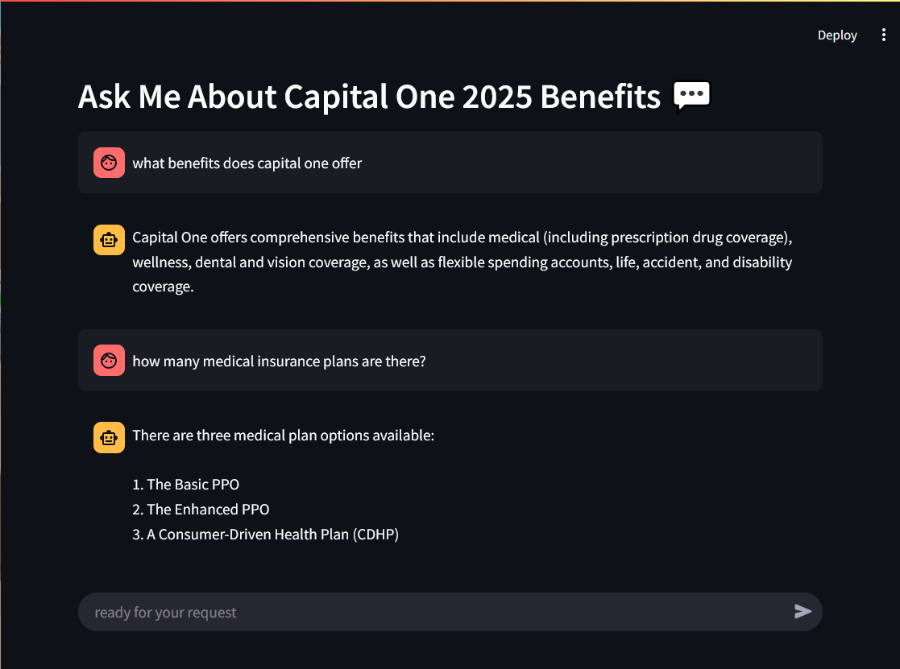

Analyzed 110K+ medical appointments to identify no-show patterns and built an XGBoost model with SMOTENC to address class imbalance, enabling accurate risk prediction and targeted outreach for high-risk groups.
Tools: Colab, Pandas, Seaborn, XgBoost

Conducted data analysis on 9,200 emergency room visits to evaluate wait times, patient volume, and satisfaction scores; developed a Power BI dashboard that revealed daily performance trends to support operational decision-making
.
Tools: Excel Online, Power BI (DAX, Date Table)
Investigated financial crime risks by importing 10,000+ transactions into BigQuery and writing SQL queries to support 13 prioritized anti-money laundering investigations; built a dashboard to inform compliance teams and guide risk mitigation strategies.
Tools: GCP BigQuery, SQL, Power BI (DAX)
Segmented customer behavior using an RFM analysis in Python, clustering transaction data by recency, frequency, and monetary value; identified high and low risk profiles to support personalized engagement and behavior monitoring strategies.
Tools: Pandas, Seaborn, Plotly, Power BI (DAX), PowerPoint
Transformed large-scale COVID-19 datasets (3,100 to 9.7M rows) from four Snowflake tables using SQL for data preparation. Built Tableau visualizations revealing a 32.3% prevalence ratio, 0.35% death rate, and 66.2% second vaccination rate, identifying Tennessee as the only state in the top 5 for both cases and deaths.
Tools: Snowflake, SQL, Tableau
Achieved 95% accuracy using a RandomForestClassifier after reducing 46 features to 17 in an IBM HR attrition dataset with 1,470 rows. Built a Streamlit app that allows users to input key parameters and receive attrition predictions with probability scores, enabling data-driven decision-making.
Tools: Pandas, Sci-kit learn, Seaborn, Colab

Developed a Retrieval-Augmented Generation (RAG) chatbot utilizing LlamaIndex and a Large Language Model (LLM) to assist employees in accessing accurate, real-time information about 2025 benefits offerings.
Tools: Python, Llamaindex, llama3.2:3b, Streamlit